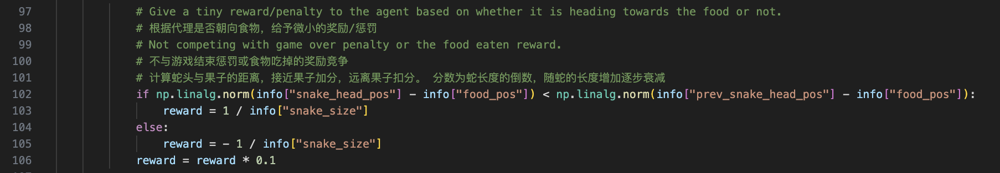

PPO 是什么？
强化学习
强化学习：agent在environment中学习，根据环境的state，执行action，并根据reward来指导更好的动作。
分类

- 按照环境是否已知：Model-Based和Model-free;
- 按照学习目标：Value-Based和Policy--Based;
PPO
PPO (Proximal Policy Optimization) 是一种用于深度强化学习的优化算法，由OpenAI于2017年提出。
- PPO是一个无模型的基于策略的强化学习算法
- PPO是OpenAI的默认算法，ChatGPT是使用PPO进行训练
- 目的：学习在某个状态下，智能体如何做动作
如何构建游戏？
环境
gym是强化学习的标准API，以及各种参考环境的集合。
TODO : 创建一个 gym 环境，用于模拟贪吃蛇游戏
在环境中，提供reset()、step()和render()这三个方法

模型
- 使用 StableBaselines3 深度强化学习工具包
- 网络选择
- 多层感知机 MLP
- 卷积神经网络 CNN

奖励
- 奖励是强化学习的灵魂
- 例如，蛇吃到奖励就给予奖励，撞墙或撞到自己身体给予惩罚
- 结果：训练出一个只会“苟且偷生”的蛇。
- 解决方法：设置一个最长步数，超过该步数就扣大量分数
- 更好的奖励
- 计算蛇头与果子的距离，接近果子加分，远离果子扣分。
- 这个分数为蛇长度的倒数，随蛇的长度增加逐步衰减。

训练
训练分析
# 采用线性衰减方法
lr_schedule = linear_schedule(2.5e-4, 2.5e-6)
clip_range_schedule = linear_schedule(0.150, 0.025)
n_steps = 2048 # 每个训练批次中的步数
batch_size = 512 # 每个训练批次中的样本数
n_epochs = 1 # 训练的轮数
gamma = 0.94 # 折扣因子 计算未来的折扣值
total_timesteps = 10000000 # 训练步数